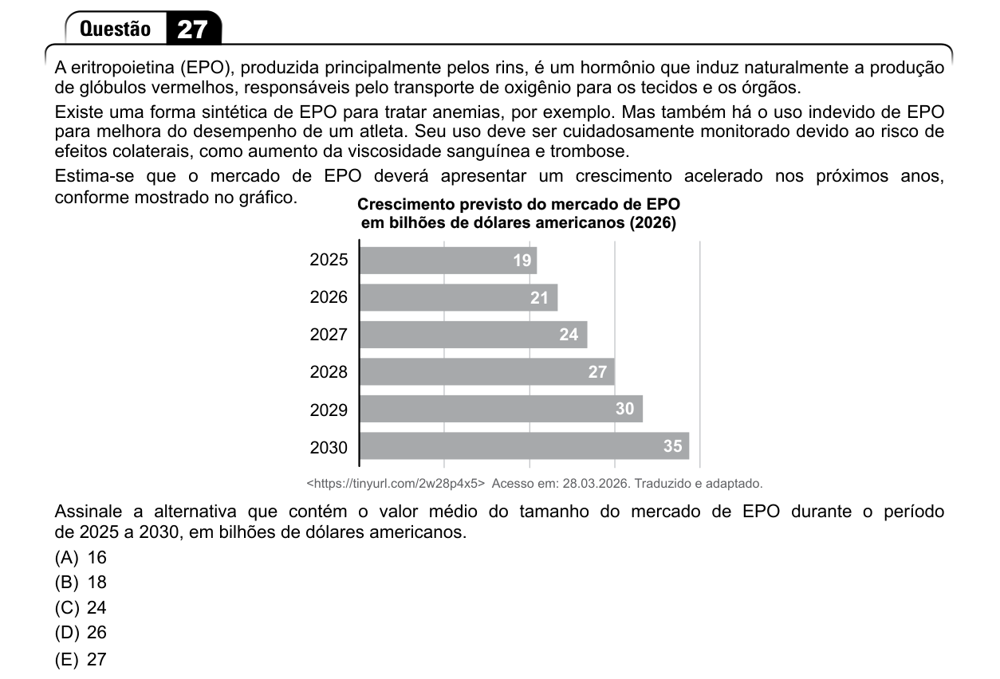
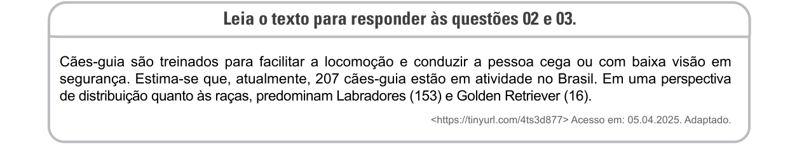
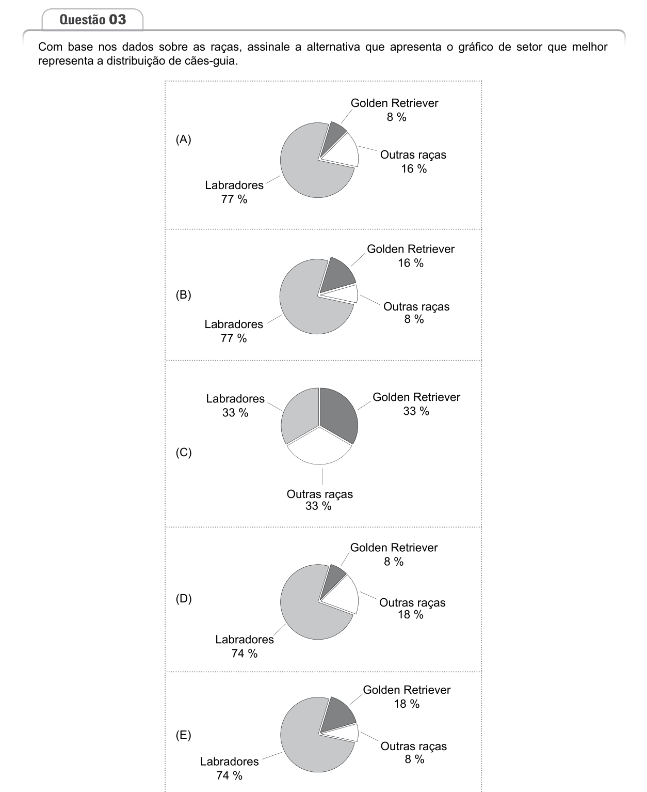
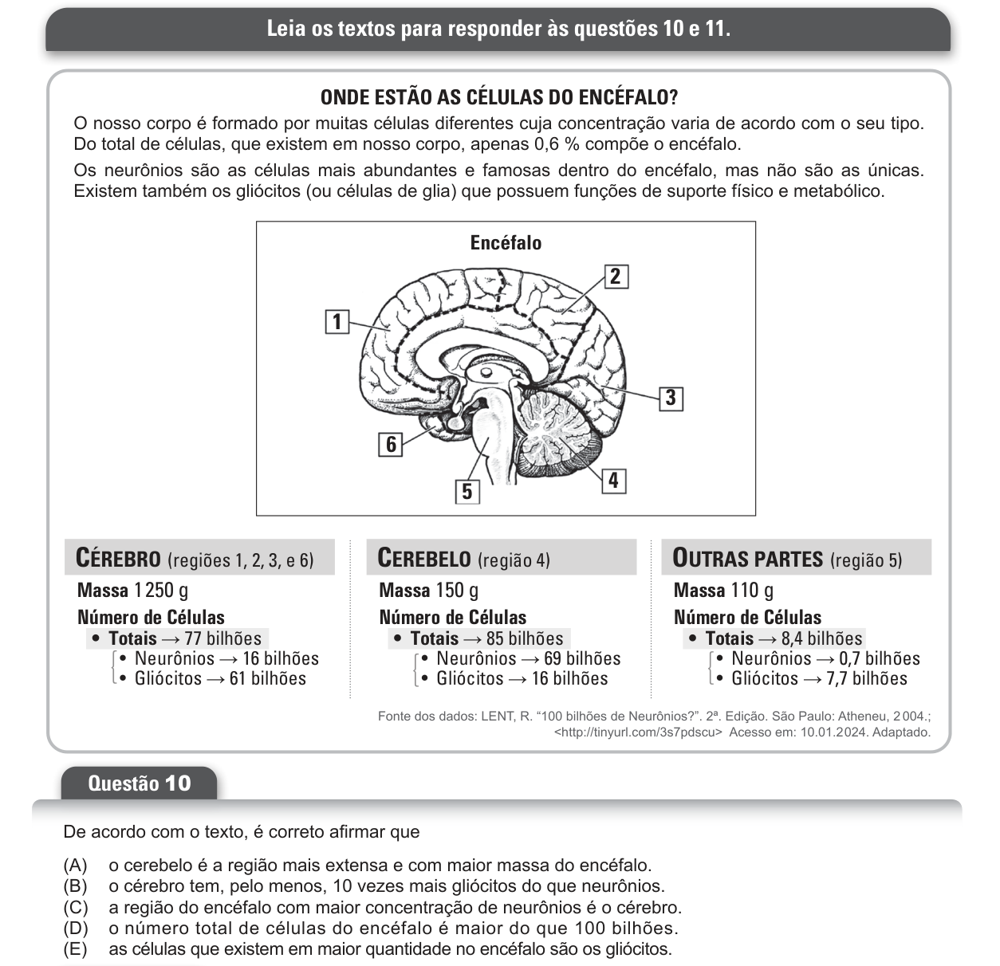
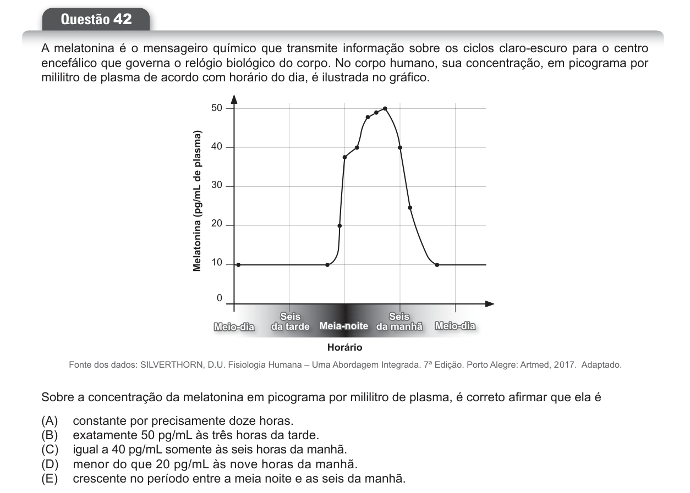
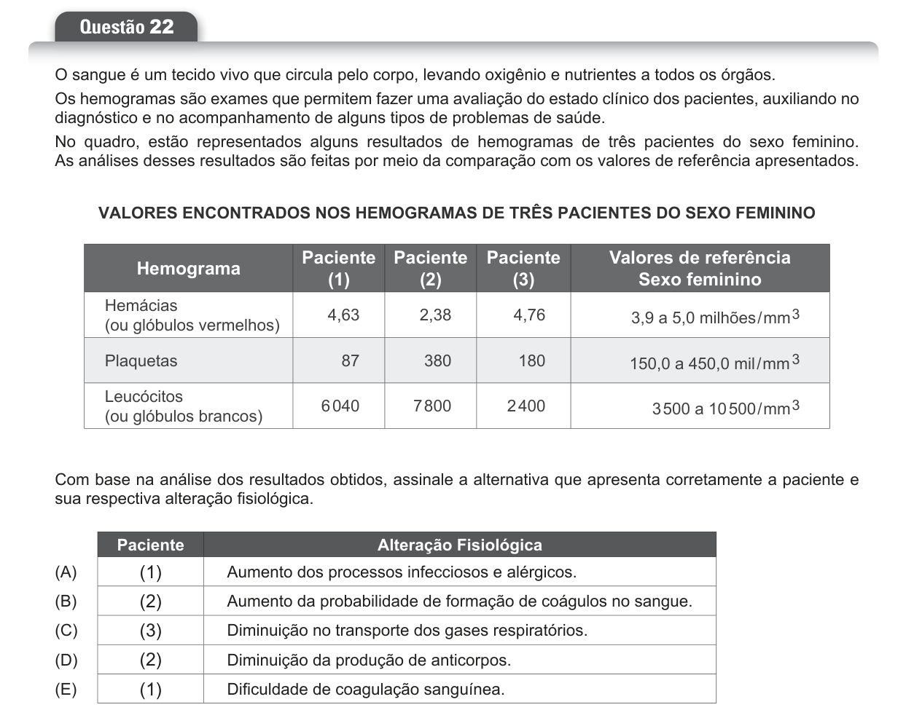

Abrir todos os gabaritos Ocultar gabaritos Recomeçar Imprimir
Os enunciados aparecem em recortes dos materiais fornecidos. Clique na imagem para ampliar. As respostas foram calculadas para este material; não são transcrições de gabaritos oficiais.
ETEC · 2º semestre de 2026 · questão 27

Selecione a letra correspondente às alternativas da imagem. Clique no enunciado para ampliar.
A B C D E
Conferir alternativa
🔽 Ver gabarito comentado Resposta: D Valores do gráfico: 19, 21, 24, 27, 30, 35.
Soma = 19 + 21 + 24 + 27 + 30 + 35 = 156.
Quantidade = 6.
Média = 156 ÷ 6 = 26 bilhões.
ETEC · 1º semestre de 2026 · questão 03


Selecione a letra correspondente às alternativas da imagem. Clique no enunciado para ampliar.
A B C D E
Conferir alternativa
🔽 Ver gabarito comentado Resposta: D Total = 207.
Labradores = 153/207 × 100 ≈ 74%.
Golden = 16/207 × 100 ≈ 8%.
Outras = 207−153−16 = 38
38/207 × 100 ≈ 18%.
O gráfico D apresenta esses valores.
ETEC · 2º semestre de 2024 · questão 10

Selecione a letra correspondente às alternativas da imagem. Clique no enunciado para ampliar.
A B C D E
Conferir alternativa
🔽 Ver gabarito comentado Resposta: D Totais: cérebro 77
cerebelo 85
outras partes 8,4 bilhões.
77 + 85 + 8,4 = 170,4 bilhões.
170,4 > 100, portanto D.
Gliócitos: 61+16+7,7 = 84,7
neurônios: 16+69+0,7 = 85,7.
ETEC · 2º semestre de 2024 · questão 42

Selecione a letra correspondente às alternativas da imagem. Clique no enunciado para ampliar.
A B C D E
Conferir alternativa
🔽 Ver gabarito comentado Resposta: D Localize 9 h, entre 6 h da manhã e meio-dia.
A curva nessa hora está abaixo de 20 pg/mL.
Logo a alternativa D é correta.
ETEC · 2º semestre de 2024 · questão 22

Selecione a letra correspondente às alternativas da imagem. Clique no enunciado para ampliar.
A B C D E
Conferir alternativa
🔽 Ver gabarito comentado Resposta: E Paciente 1: plaquetas = 87 mil/mm³, abaixo de 150 mil/mm³ (limite inferior).
Plaquetas participam da coagulação do sangue.
Portanto a paciente 1 tem indicação de dificuldade de coagulação, alternativa E.